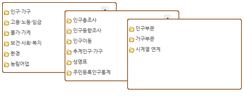

자료등록 방법
-
- 요청URL
-
https://kosis.kr/openapi/statisticsData.do?method=getList
-
- 요청변수
-
요청URL로 요청변수, 변수타입, 설명, 비고를 제공합니다 요청변수 변수타입 설명 비고 apiKey String 발급된 인증 key 필수 userStatsId String 사용자 등록 통계표 필수 type String SDMX의 유형(Generic) 필수 prdSe String 수록주기 필수 시점기준 startPrdDe String 시작수록시점 선택 (시점기준 또는 최신자료기준 택1)
※설정이 없을경우 최근시점1개 조회endPrdDe String 종료수록시점 최신자료기준 newEstPrdCnt String 최근수록시점 개수 prdInterval String 수록시점 간격
ex) 2019, 2017, 2015 등 2개 시점 간격으로 추출시 [2] 입력format String 결과 유형(sdmx) 필수 version String 결과값 구분 생략시 구버전으로 데이터 출력
통계표선택 방법
-
- 요청URL
-
https://kosis.kr/openapi/Param/statisticsParameterData.do?method=getList
-
- 요청변수
-
요청URL로 요청변수, 변수타입, 설명, 비고를 제공합니다 요청변수 변수타입 설명 비고 apiKey String 발급된 인증 key 필수 orgId String 기관 ID 필수 tblId String 통계표 ID 필수 objL1 String 분류1(첫번째 분류코드) 필수 objL2 ~ objL8 String 분류2(두번째 분류코드) ~ 분류8(여덟째 분류코드) 선택 itmId String 항목 필수 type String SDMX의 유형(Generic) 필수 prdSe String 수록주기 필수 시점기준 startPrdDe String 시작수록시점 선택 (시점기준 또는 최신자료기준 택1)
※설정이 없을경우 최근시점1개 조회endPrdDe String 종료수록시점 최신자료기준 newEstPrdCnt String 최근수록시점 개수 prdInterval String 수록시점 간격
ex) 2019, 2017, 2015 등 2개 시점 간격으로 추출시 [2] 입력format String 결과 유형(sdmx) 필수 version String 결과값 구분 생략시 구버전으로 데이터 출력
-
- 출력결과
-
출력변수
출력변수로 출력변수,내용,설명을 제공합니다 출력변수 비고 Header ID 기관코드_통계표ID Prepared 전송시간 Sender Id 전송기관 Name 전송기관명 Contact Department 담당부서 Telephone 담당부서 연락처 Name 통계표명 Source 출처 Series C_분류 C_분류
(8개 분류까지 가능)ITEM 항목 UNIT 단위 FREQ 주기 OBS TIME_PERIOD 시점 OBS_VALUE 수치자료 LST_CHN_DE 최종수정일
-
- 통계자료 예제
(JSP, R, Python) -

- 통계자료 예제
-
- 샘플데이터 확인
-
파라미터(Input)
파라미터(Input)로 필드명,설명,조회조건을 제공합니다 요청변수 설명 조회조건 userStatsId 사용자 등록 통계표 prdSe 수록주기 startPrdDe 시점기준 시작수록시점 endPrdDe 종료수록시점 newEstPrdCnt 최신자료기준 최근수록시점 개수 prdInterval 수록시점 간격 결과(Output)인구, 가구 및 주택 – 읍면동(연도 끝자리 0, 5), 시군구(그 외 연도)
행정구역별(읍면동) 항목 2021 2022 2023 전국 총인구 (명) 51738071 51692272 51774521 SDMX 결과
소스보기
소스
-
내용입력
-
내용입력
-
Python
주기코드 및 시점
※ 주기에 따른 시점
| 주기 | 설명 | 입력값 (prdSe) |
출력값 | |
|---|---|---|---|---|
| JSON (PRD_SE) |
SDMX (FREQ) |
|||
| 일 | 1일 주기 | D | D | D |
| 일 | 1개월 주기 | M | M | M |
| 분기 | 1개월 주기 | Q | Q | Q |
| 반기 | 3개월 주기 | H | H | H |
| 년 | 1년 주기 | Y | Y | Y |
| 2년 | 2년 주기 | Y | Y | Y |
| 3년 | 3년 주기 | Y | Y | Y |
| 4년 | 4년 주기 | Y | Y | Y |
| 5년 | 5년 주기 | Y | Y | Y |
| 10년 | 10년 주기 | Y | Y | Y |
| 부정기 | 1회한, 수시 등 | IR | IR | IR |
주기코드 및 시점
※ 주기에 따른 시점
| 주기 | 주기변수 (prdSe) |
시점변수 입력형식 (startPrdDe, endPrdDe) |
|
|---|---|---|---|
| 일 | D | YYYYMMDD | ex)20140101 |
| 월 | D | YYYYMM(MM:01~12) | ex)201401 |
| 격월 | M | YYYYMM(MM:홀수월) | ex)201401, 201403 |
| 분기 | Q | YYYYQQ(QQ:01～04) | ex)201401 |
| 반기 | S | YYYYHH(HH:01,02) | ex)201401 |
| 년 | Y | YYYY | ex)2014 |
| 2년 | Y | YYYY | ex)2014, 2016.. |
| 3년 | Y | YYYY | ex)2014, 2017.. |
| 4년 | Y | YYYY | ex)2014, 2018.. |
| 5년 | Y | YYYY | ex)2014, 2019.. |
| 10년 | Y | YYYY | ex)2014, 2024.. |
| 부정기 | IR | YYYY, YYYYMM, YYYYMMDD | ex)2014, 20140101.. |